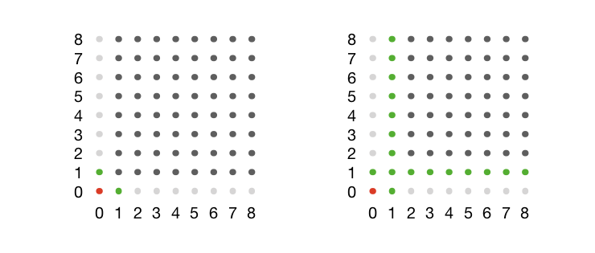
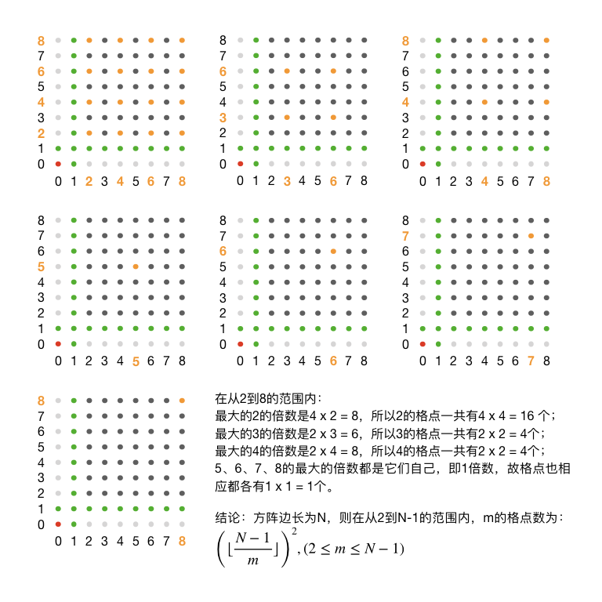
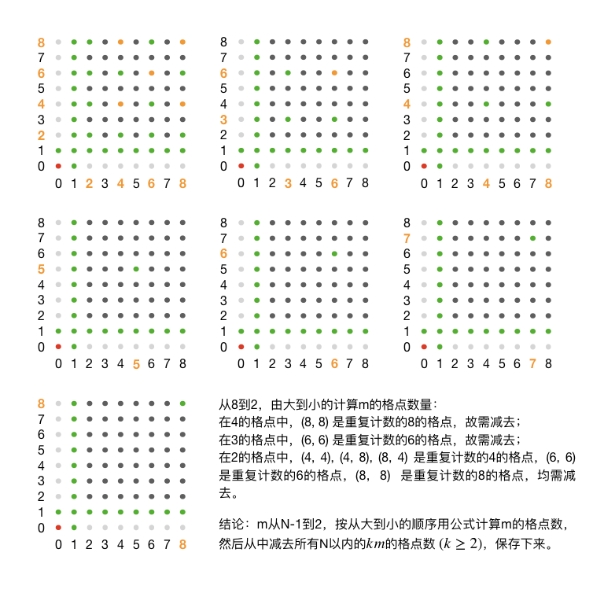
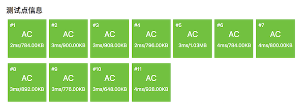

8.1. 互质对：仪仗队（洛谷P2158，SDOI2008）¶
题目描述
作为体育委员，C君负责这次运动会仪仗队的训练。仪仗队是由学生组成的 \(N\times N\) 的方阵，为了保证队伍在行进中整齐划一，C君会跟在仪仗队的左后方，根据其视线所及的学生人数来判断队伍是否整齐(如下图)。

现在，C君希望你告诉他队伍整齐时能看到的学生人数。
输入格式
共一个数 \(N\)
输出格式
共一个数，即C君应看到的学生人数。
输入输出样例
输入：
4
输出：
9
说明/提示
【数据规模和约定】
对于 \(100\%\) 的数据，\(1 \le N \le 40000\)
题意分析
对示例图中建立坐标系，以C君所在位置为坐标原点(0,0)，其余每位学生所在位置的横纵坐标值都用自然数0,1,…,N-1依次表示。直角坐标系中这样的坐标值都是整数的点数学上也称之为格点。除C君以外，一共有N2-1位同学。
第一步一定要先分析有没有需要特判的数据。题目给出的数据范围说明N有可能为1，这种情况下方阵只有C君一个人，所以可以特判掉，直接输出0，结束。
正常情况下N>1。先排除一些特殊的视线。从原点出发的水平线和垂直线是最特殊的，显然在这两条直线上，C君只能看到两位同学(1,0)和(0,1)，其他的都可以排除掉。这样就知道了C君应看到的人数至少有2人。要考虑的方阵缩小为从(1,1)到(N-1,N-1)的区域。
然后是左起第二列和倒数第二行，不难发现，这两条直线上的所有学生，C君都是看得见的，他们不会被任何人遮挡。所以C君应看到的人数右增加了2(N-1)-1=2N-3人，加上前面的2人就有了2N-1个确定一定以及肯定可以看到的人了。要考虑的方阵进一步缩小为从(2,2)到(N-1,N-1)的区域，共有(N-2)2个人。
下面的示意图用一个N=9的方阵展示了到目前为止的状态。红色的点为C君，绿色的点为已经确定可以看到的学生，浅灰色的点是已经确定不会被看到的学生，深灰色的点表示还需要进一步分析的部分。
下面我们来分析一下剩余的学生怎样判断其是否可被C君看见。
从C君所在位置看去，在同一条视线上的学生只能看到第一个。视线是一条直线，从原点出发的直线可以用方程 \(y=kx\) 来表示，这里 \(x\) 和 \(y\) 都必须是整数。如果 \(x\) 和 \(y\) 有大于1的公因数 \(q\)，即 \(x=qx^\prime,y=qy^\prime\)，那么 \(y=kx\implies y^\prime=kx^\prime\)，意味着位置 \((x^\prime,y^\prime)\) 上的学生一定和 \((x,y)\) 上的学生共线并且位置离C君更近，所以 \((x,y)\) 上的学生一定会被挡。
结论
位置 \((x,y)\) 上的学生会被C君看到的条件是 \(x\) 和 \(y\) 互质。
事实上，左起第二列和倒数第二行上的所有学生之所以都不会被遮挡，都能被C君看到的原因也就是因为它们的位置坐标里至少有一个为1，而1和任何正整数互质。于是问题变成了求整数区间[2,N-1]内的数一共能组成多少个有序互质对。
这个问题直接的解法是使用欧拉 \(\varphi\) 函数。对于任意正整数 \(z\)，\(\varphi(z)\) 的值等于整数区间 \([1,z]\) 内和 \(z\) 互质的数的个数。只要会算这个函数值，求有序互质对数量就不难了。对于任意的 \(z\gt1\)，一定恰好有 \(2\varphi(z)\) 个与它有关的有序互质对；\(z=1\) 则比较特殊，因为和1互质的数只有1自己，所以只有一个互质对(1, 1)。别忘了还有两位最特殊的同学(0, 1)和(1, 0)。最终问题的解可以归纳为公式：
单个单个地去计算所有欧拉函数值估计要TLE，我们应该用欧拉线性筛来打出函数值表，时间复杂度可以达到接近 \(O(n)\)。
不过可能许多人还不会欧拉函数，或许学过但是不熟练，说实话还是挺难的。所以这里我们介绍一种比较容易理解也比较容易编程的动态规划方法，这种方法同样能达到接近 \(O(n)\) 的时间复杂度，效率非常之高。
既然决定不用欧拉函数，那么正面求解互质对数量就不太可能了，我们采用迂回策略。我们可以求出从(2,2)到(N-1,N-1)的区域中“不互质对”的数量，然后从总量(N-2)2中减去它不就是互质对的数量了吗？
整数区间[2,N-1]中的任一整数，它的所有大于1的因数当然也只能都在这个区间里。所以我们可以枚举所有可能的因数 \(m\)，计算含有公因数 \(m\) 的不互质对的数量。比如具有公因数2的不互质对有(2, 2)、(2, 4)、(4, 2)、(4, 4)、(2, 6)、……它们的共同点就是两个坐标值都是2的倍数。因此我们可以用 \((pm,qm)\) 来表示具有公因数 \(m\) 的不互质数对，其中 \((p,q\in\Bbb{Z}^+,pm \lt N, qm \lt N)\)。当这些数对用来表示格点坐标时，我们也称它们为 \(m\) 的格点。
结论
整数区间 \([2,N-1]\) 内，任一整数 \(m\) 的格点数量为 \(\left\lfloor\frac{N-1}{m}\right\rfloor^2\)。
这是因为我们要求格点的坐标值 \(m,2m,\dots,pm\) 也都必须要在这个范围内，即要满足 \(pm\le N-1\implies p=\left\lfloor\frac{N-1}{m}\right\rfloor\)。
下面继续用前面那个例子来看一看在 \(N=9\) 时的格点分布情况，橙色的点表示从2到8的格点，一共7张图：
但是如果我们把这些图叠起来一看就容易发现，有不少数的格点之间是有重叠的。例如在4个4的格点中，(8, 8)又是8的格点，在4个3的格点中，(6, 6)又是6的格点。
所以我们在从总人数中减去从2到N-1的格点数时，势必要先做一道去除重复的工作，否则就减多了。去重的方法也很简单，我们用动态规划法从N-1到2逆序地来计算它们的格点数量。每计算好一个m的格点数，我们就从2m开始在范围[2m, N-1]之内去寻找并减掉m的倍数的格点数。因为这些倍数都更大，所以肯定已经在我们的动态规划过程中先行计算好了，动态规划过程一定会成功。
让我们仍以N=9为例，看看这个动态规划的过程是怎样的。我们用数组 int x[9] 来表示动态规划表，用变量 int m 从8到2的循环来计算 x[m] 的值，即m的格点中经过去重处理后的非互质对的数量，是最终要从总人数中减去的人数。
|
|
|
重复计算人数 |
|
动态规划表 |
|---|---|---|---|---|---|
|
|
无 |
无 |
|
|
|
|
无 |
无 |
|
|
|
|
无 |
无 |
|
|
|
|
无 |
无 |
|
|
|
|
|
|
|
|
|
|
|
|
|
|
|
|
|
|
|
|
这样一个动态规划过程构建完成后，我们用 \((9-2)^2=49\) 减去动态规划表中各项之和就得到了从 \((2,2)\) 到 \((8,8)\) 这个范围的方阵中可以被C君看到的学生数量。再加上左边2列和下面2行中已经知道的能被C君看到的 \(2\times 9-1=17\) 位学生，就得到了整个 \(N=9\) 的方阵中能被C君看到的总学生数 \(17+49-(11+3+3+1+1+1+1)=45\) 人。
结论
设输入的方阵规模为 \(N\)，按上述算法构建动态规划表 \(\{x_2,\dots,x_{N-1}\}\) 后即可得到结果，能被C君看到的学生数量为：
按照上述算法，不难编写出下面的程序：
#include <cstdio>
int main()
{
// cnt: 答案，C君能看到的学生人数
// x[]: 动态规划表，从x[2]到x[n-1]项表示看不见的人数（非互质对数量）
int n, cnt, x[40000] = { 0 };
scanf("%d", &n);
if (n == 1) {
printf("0\n");
return 0;
}
cnt = 2 * n - 1 + (n - 2) * (n - 2);
for (int m = n - 1; m >= 2; m--) {
x[m] = ((n - 1) / m) * ((n - 1) / m);
for (int km = m + m; km < n; km += m)
x[m] -= x[km];
}
for (int m = 2; m < n; m++)
cnt -= x[m];
printf("%d\n", cnt);
return 0;
}
提交后很快得到AC结果：
看得出来这个算法运行得非常快，已经很接近 \(O(n)\) 的水平了。不知道用欧拉线性筛打欧拉函数表的算法会不会更快一些？有兴趣的话可以作为练习尝试一下。